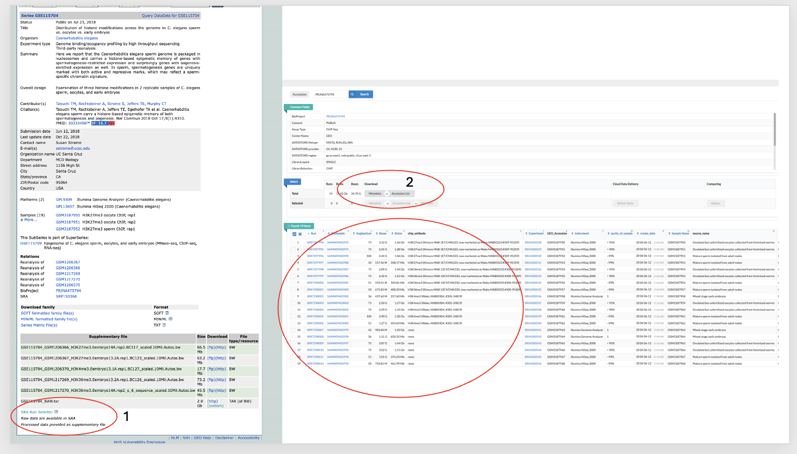

Getting the Raw Data (FASTQ)¶
GEO SRA FASTQ fasterq-dump sra-toolkit data-download sequencing-data NCBI public-datasets
[!NOTE] Reminder: While this tutorial teaches you how to download data from SRA, our focus is on SRA data.
Level 1: Basic Concept¶
The "Library" Analogy¶
Before we download anything, it helps to understand where the data lives. Think of the public databases like a University Library.
- GEO (Gene Expression Omnibus): This is the Card Catalog. It has the descriptions (Metadata) of the experiments—like "H3K27ac in Breast Cancer"—but it usually doesn't hold the actual heavy books (data files).
- SRA (Sequence Read Archive) & ENA (European Nucleotide Archive): These are the Stacks. This is where the actual raw data files are stored.
Your Goal: You find an interesting study in the Catalog (GEO), get its ID, and then send a runner (our software tool) to the Stacks (SRA/ENA) to fetch the files.
The Files You Will Encounter¶
- FASTQ (Raw Reads):
- BAM (Aligned Reads):
- BED/BigWig (Signals):
Level 2: Fetching the data¶
Complete information for all sequencing runs associated with this repository is available through the NCBI SRA Run Selector (PRJNA475794). The Run Selector provides an interactive interface to inspect sequencing metadata, including library layout, platform, read length, and experimental design.
From this interface, you can download the full metadata table as well as a plain accession list containing the SRR identifiers. The accession list can be saved as srr_list.txt and used directly for automated data retrieval. Unwanted runs can be removed from this file before download, allowing precise control over which datasets are processed.

To download data, we use a tool called fastq-dl. It acts like a smart librarian—you just give it the ID number, and it deals with the complicated databases for you.
2.1 Download a Single Sample¶
If you have a Run ID (starts with SRR or ERR), use this command:
# Download H3K27me3 IP replicate 1
fastq-dl --accession SRR7297996 --provider SRA --cpus 4
# Or from ENA (often faster/more reliable)
fastq-dl --accession SRR7297996 --provider ena
2.2 Download Multiple Samples (The Loop)¶
Usually, you need to download many samples. Instead of typing the command 10 times, we put the IDs in a list.
-
Create a file named
srr_list.txtwith one ID per line:SRR7297996 SRR7297997 SRR7298011 SRR7298012 -
Run this "Loop" to download them one by one:
#!/bin/bash
set -euo pipefail
RAW_DIR="fastq_raw"
mkdir -p "$RAW_DIR"
while read -r acc; do
echo "Downloading accession: $acc"
fastq-dl \
--accession "$acc" \
--provider SRA \
--cpus 1 \
--outdir "$RAW_DIR"
echo "Finished downloading: $acc"
done < srr_list.txt
2.3 Parallel Download (The Fast Way)¶
If you have a powerful computer, you can download multiple files at the same time using parallel.
#!/bin/bash
set -euo pipefail
mkdir -p fastq_raw
parallel -j 4 \
'echo "Starting download: {}" &&
fastq-dl --accession {} --provider SRA --cpus 1 --outdir fastq_raw &&
echo "Finished download: {}"' \
:::: srr_list.txt
Directory structure after download:
chipseq_tutorial/
├── fastq_raw/ ← Downloaded files from SRA/ENA
│ ├── SRR7297996.fastq.gz
│ ├── SRR7297997.fastq.gz
│ ├── SRR7298011.fastq.gz
│ ├── SRR7298012.fastq.gz
│ └── ...
└── srr_list.txt ← SRR ID list used for download
2.3: Renaming Downloaded Files¶
After downloading, the files will have generic SRR IDs as names. It's best practice to rename them to biological sample names based on the metadata:
Sample Mapping Table:
| SRR ID | Sample Type | Descriptive Name |
|---|---|---|
| SRR7297996 | H3K27me3 IP | H3K27me3_IP_rep1 |
| SRR7297997 | H3K27me3 IP | H3K27me3_IP_rep2 |
| SRR7298011 | Input control | Input_rep1 |
| SRR7298012 | Input control | Input_rep2 |
Renaming Script:
#!/bin/bash
set -euo pipefail
cd fastq_raw/
# Rename SRR7297996 (H3K27me3 IP rep1)
mv SRR7297996.fastq.gz H3K27me3_IP_rep1.fastq.gz
# Rename SRR7297997 (H3K27me3 IP rep2)
mv SRR7297997.fastq.gz H3K27me3_IP_rep2.fastq.gz
# Rename SRR7298011 (Input rep1)
mv SRR7298011.fastq.gz Input_rep1.fastq.gz
# Rename SRR7298012 (Input rep2)
mv SRR7298012.fastq.gz Input_rep2.fastq.gz
echo "Renaming complete!"
2.4: Creating Sample ID List¶
After renaming, create sample_id.txt with clean sample names for downstream automation:
# Create sample_id.txt from renamed files
cd fastq_raw/
ls *.fastq.gz | sed 's/.fastq.gz//' > ../sample_id.txt
cd ..
mv fastq_raw/sample_id.txt .
cat sample_id.txt
Contents of sample_id.txt:
H3K27me3_IP_rep1
H3K27me3_IP_rep2
Input_rep1
Input_rep2
This file will be used in all downstream automation loops (QC, alignment, deduplication, etc.).
Directory structure after renaming:
chipseq_tutorial/
├── fastq_raw/ ← Renamed FASTQ files
│ ├── H3K27me3_IP_rep1.fastq.gz
│ ├── H3K27me3_IP_rep2.fastq.gz
│ ├── Input_rep1.fastq.gz
│ └── Input_rep2.fastq.gz
├── srr_list.txt ← Original SRR ID list
└── sample_id.txt ← Clean sample names for automation
2.4 Download an Entire Study¶
You can also download everything associated with a study ID (starts with SRP or PRJNA):
fastq-dl --accession SRP115709
Note: Be careful! A whole study might have hundreds of files.
Connecting GEO to SRA¶
How do we find the SRR numbers? In GEO, you will see a hierarchy. It's important not to mix these up:
| Level | Prefix (SRA / ENA) | What It Is |
|---|---|---|
| Project | PRJNA / PRJEB | The umbrella project (e.g., "Breast Cancer Epigenomics 2024"). |
| Study | SRP / ERP | A specific paper or dataset. |
| Sample | SRS / ERS | The biological sample (e.g., "Patient 5 Tumor"). |
| Experiment | SRX / ERX | The library prep info. |
| Run | SRR / ERR | The actual data. This is what you download. |
Technical Replicates (Multi-lane)¶
Sometimes, one biological sample is sequenced across multiple "lanes" of a machine to get more reads.
- Result: You might see
SRR900100andSRR900101for the same sample. - Action:
fastq-dlwill download them. Later, we will merge these FASTQ files together so we have one big file for that sample.
Summary¶
- Understand: GEO is for metadata; SRA/ENA is for data.
- Identify: Find the SRR (Run) IDs for your samples.
- Download: Use
fastq-dlwith a loop or parallel command to fetch the FASTQ files.
[!NOTE] Up Next: The FASTQ files are now available. We proceed with read inspection, quality control, and trimming.